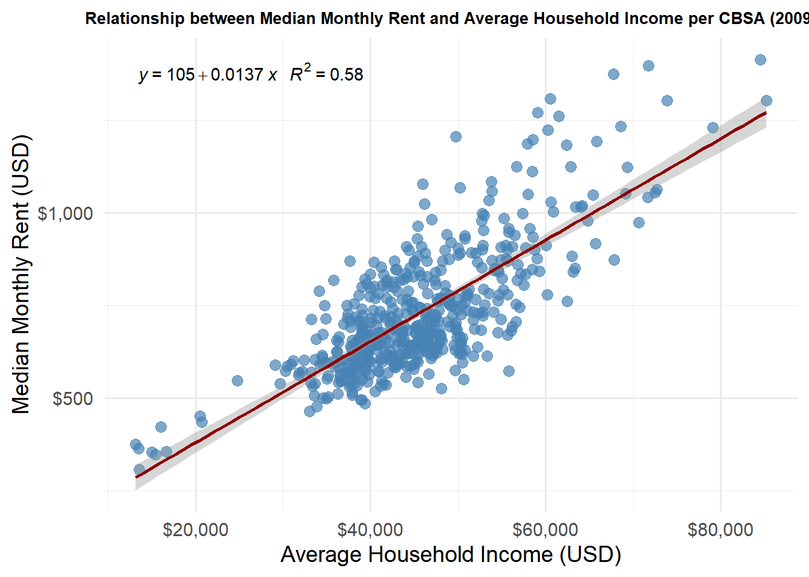
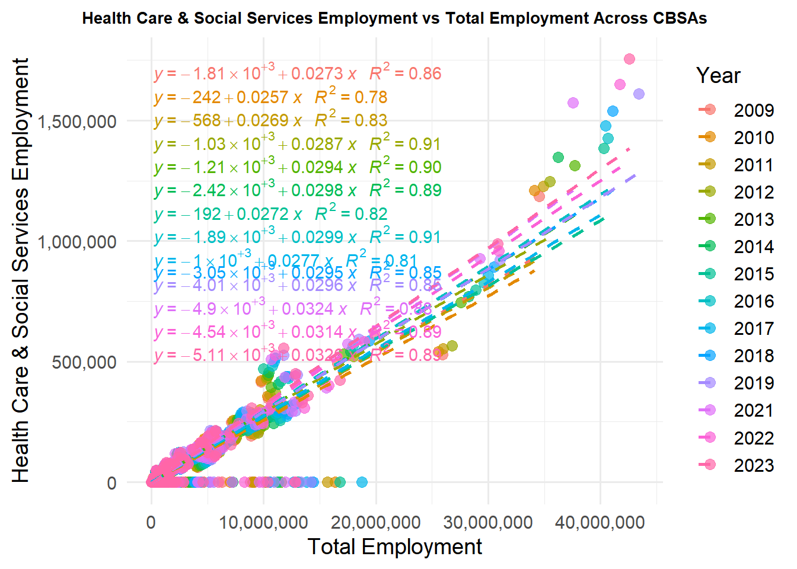
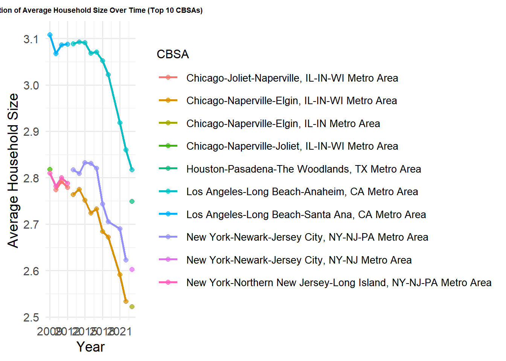
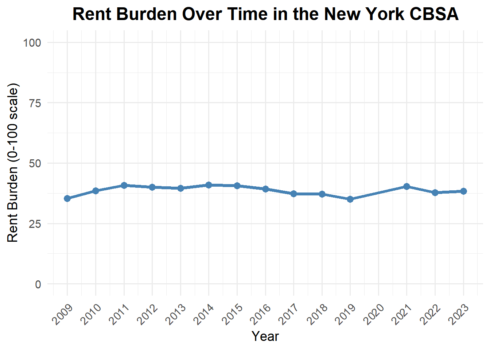
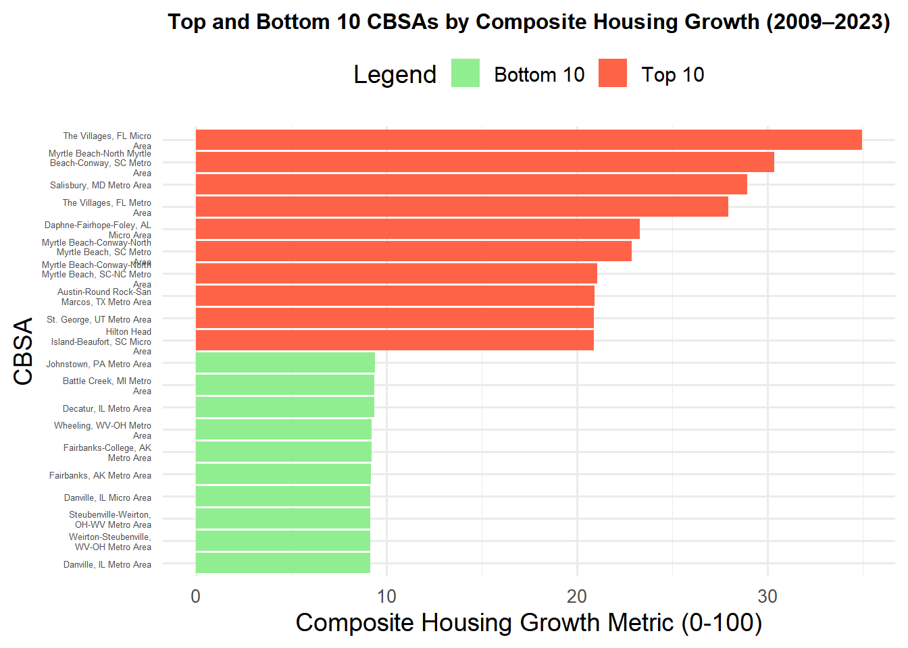
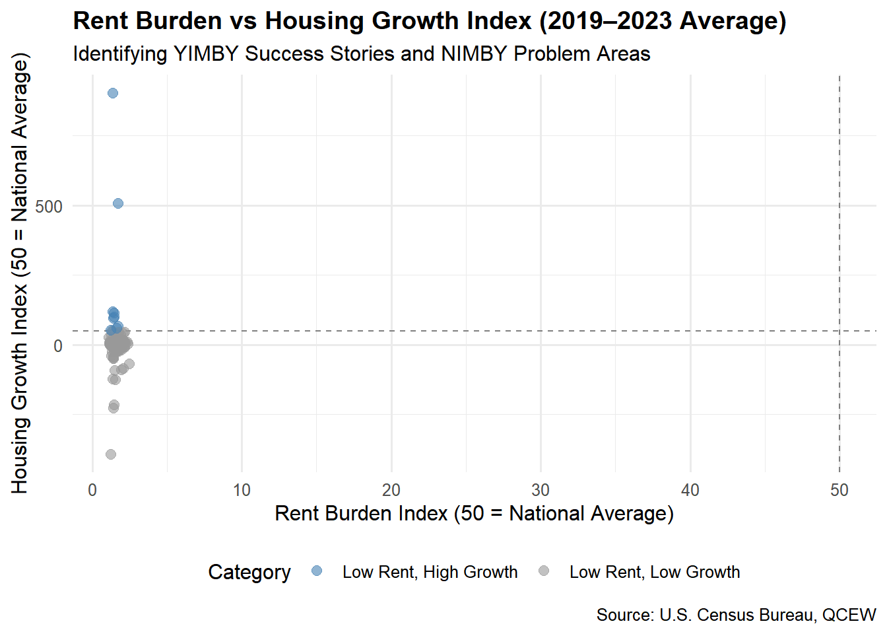

This project explores the dynamics of house affordability in New York City. Reduced cost and diversity amongst the population are key components to a successful city. Our goal is to create an elevator pitch to our representatives in Congress that emphasizes the adoptions of YIMBY policies. First, we shall retrieve the data.
if(!dir.exists(file.path("data", "mp02"))){dir.create(file.path("data", "mp02"), showWarnings=FALSE, recursive=TRUE)}library <-function(pkg){## Mask base::library() to automatically install packages if needed## Masking is important here so downlit picks up packages and links## to documentation pkg <-as.character(substitute(pkg))options(repos =c(CRAN ="https://cloud.r-project.org"))if(!require(pkg, character.only=TRUE, quietly=TRUE)) install.packages(pkg)stopifnot(require(pkg, character.only=TRUE, quietly=TRUE))}library(tidyverse)
Warning: package 'tidyverse' was built under R version 4.3.3
Warning: package 'tibble' was built under R version 4.3.3
Warning: package 'tidyr' was built under R version 4.3.3
Warning: package 'readr' was built under R version 4.3.3
Warning: package 'purrr' was built under R version 4.3.3
Warning: package 'dplyr' was built under R version 4.3.3
Warning: package 'forcats' was built under R version 4.3.3
Warning: package 'lubridate' was built under R version 4.3.3
── Attaching core tidyverse packages ──────────────────────── tidyverse 2.0.0 ──
✔ dplyr 1.1.4 ✔ readr 2.1.5
✔ forcats 1.0.0 ✔ stringr 1.5.1
✔ ggplot2 3.5.2 ✔ tibble 3.2.1
✔ lubridate 1.9.4 ✔ tidyr 1.3.1
✔ purrr 1.0.2
── Conflicts ────────────────────────────────────────── tidyverse_conflicts() ──
✖ dplyr::filter() masks stats::filter()
✖ dplyr::lag() masks stats::lag()
ℹ Use the conflicted package (<http://conflicted.r-lib.org/>) to force all conflicts to become errors
library(glue)library(readxl)
Warning: package 'readxl' was built under R version 4.3.3
library(tidycensus)get_acs_all_years <-function(variable, geography="cbsa",start_year=2009, end_year=2023){ fname <-glue("{variable}_{geography}_{start_year}_{end_year}.csv") fname <-file.path("data", "mp02", fname)if(!file.exists(fname)){ YEARS <-seq(start_year, end_year) YEARS <- YEARS[YEARS !=2020] # Drop 2020 - No survey (covid) ALL_DATA <-map(YEARS, function(yy){ tidycensus::get_acs(geography, variable, year=yy, survey="acs1") |>mutate(year=yy) |>select(-moe, -variable) |>rename(!!variable := estimate) }) |>bind_rows()write_csv(ALL_DATA, fname) }read_csv(fname, show_col_types=FALSE)}# Household income (12 month)INCOME <-get_acs_all_years("B19013_001") |>rename(household_income = B19013_001)# Monthly rentRENT <-get_acs_all_years("B25064_001") |>rename(monthly_rent = B25064_001)# Total populationPOPULATION <-get_acs_all_years("B01003_001") |>rename(population = B01003_001)# Total number of householdsHOUSEHOLDS <-get_acs_all_years("B11001_001") |>rename(households = B11001_001)
We also want to see how many houses were built per annum for the scope period of 2009 through 2023.
Now, we need to download the NAICS data to do some analysis
library(httr2)library(rvest)
Warning: package 'rvest' was built under R version 4.3.3
Attaching package: 'rvest'
The following object is masked from 'package:readr':
guess_encoding
library(dplyr)library(tidyr)library(readr)
remove.packages("curl")
Removing package from 'C:/Users/shlom/AppData/Local/R/win-library/4.3'
(as 'lib' is unspecified)
# then check manually that it's gonesystem.file(package ="curl")
[1] ""
install.packages("curl", type ="binary")
Installing package into 'C:/Users/shlom/AppData/Local/R/win-library/4.3'
(as 'lib' is unspecified)
There is a binary version available (and will be installed) but the
source version is later:
binary source
curl 6.2.2 7.0.0
package 'curl' successfully unpacked and MD5 sums checked
The downloaded binary packages are in
C:\Users\shlom\AppData\Local\Temp\RtmpQDomWA\downloaded_packages
library(httr2)library(rvest)get_bls_industry_codes <-function(){ fname <-file.path("data", "mp02", "bls_industry_codes.csv")library(dplyr)library(tidyr)library(readr)if(!file.exists(fname)){ resp <-request("https://www.bls.gov") |>req_url_path("cew", "classifications", "industry", "industry-titles.htm") |>req_headers(`User-Agent`="Mozilla/5.0 (Macintosh; Intel Mac OS X 10.15; rv:143.0) Gecko/20100101 Firefox/143.0") |>req_error(is_error = \(resp) FALSE) |>req_perform()resp_check_status(resp) naics_table <-resp_body_html(resp) |>html_element("#naics_titles") |>html_table() |>mutate(title =str_trim(str_remove(str_remove(`Industry Title`, Code), "NAICS"))) |>select(-`Industry Title`) |>mutate(depth =if_else(nchar(Code) <=5, nchar(Code) -1, NA)) |>filter(!is.na(depth))# These were looked up manually on bls.gov after finding # they were presented as ranges. Since there are only three# it was easier to manually handle than to special-case everything else naics_missing <- tibble::tribble(~Code, ~title, ~depth, "31", "Manufacturing", 1,"32", "Manufacturing", 1,"33", "Manufacturing", 1,"44", "Retail", 1, "45", "Retail", 1,"48", "Transportation and Warehousing", 1, "49", "Transportation and Warehousing", 1 ) naics_table <-bind_rows(naics_table, naics_missing) naics_table <- naics_table |>filter(depth ==4) |>rename(level4_title=title) |>mutate(level1_code =str_sub(Code, end=2), level2_code =str_sub(Code, end=3), level3_code =str_sub(Code, end=4)) |>left_join(naics_table, join_by(level1_code == Code)) |>rename(level1_title=title) |>left_join(naics_table, join_by(level2_code == Code)) |>rename(level2_title=title) |>left_join(naics_table, join_by(level3_code == Code)) |>rename(level3_title=title) |>select(-starts_with("depth")) |>rename(level4_code = Code) |>select(level1_title, level2_title, level3_title, level4_title, level1_code, level2_code, level3_code, level4_code) |>drop_na() |>mutate(across(contains("code"), as.integer))write_csv(naics_table, fname) }read_csv(fname, show_col_types=FALSE)}INDUSTRY_CODES <-get_bls_industry_codes()
Task 2: Analysis:
Question 1:
library(dplyr)# --- Step 0: Create CBSA lookup table ---# Replace with your actual CBSA codes and namesCBSA_CODES <- tibble::tibble(CBSA =c(31080, 16980, 26420, 19820), # example codesCBSA_name =c("New York-Newark-Jersey City, NY-NJ-PA","Los Angeles-Long Beach-Anaheim, CA","Chicago-Naperville-Elgin, IL-IN-WI","Dallas-Fort Worth-Arlington, TX" ))# --- Step 1: Table 1 - total permits per CBSA ---table1 <- PERMITS %>%filter(year >=2010& year <=2019) %>%group_by(CBSA) %>%summarise(total_new_units =sum(new_housing_units_permitted, na.rm =TRUE)) %>%ungroup()# --- Step 2: Table 2 - number of years reported per CBSA ---table2 <- PERMITS %>%filter(year >=2010& year <=2019) %>%group_by(CBSA) %>%summarise(years_reported =n()) %>%ungroup()# --- Step 3: Combine the tables and join CBSA names ---combined_table <- table1 %>%left_join(table2, by ="CBSA") %>%left_join(CBSA_CODES, by ="CBSA") %>%arrange(desc(total_new_units))# --- Step 4: Extract the top CBSA ---top_cbsa <- combined_table %>%slice(1)# --- Step 5: Create the sentence ---sentence <-paste0("The CBSA that permitted the most new housing units was ", top_cbsa$CBSA_name,", with a total of ", top_cbsa$total_new_units," units from 2010 to 2019.")# --- Output ---combined_table # full table with totals, years, and names
[1] "The CBSA that permitted the most new housing units was Chicago-Naperville-Elgin, IL-IN-WI, with a total of 482075 units from 2010 to 2019."
library(readr)library(dplyr)# Build the path safely with file.path()cbsa_file <-file.path("C:", "Users", "shlom", "OneDrive", "Documents","STA9750-2025-FALL", "data", "mp02","B01003_001_cbsa_2009_2023.csv")# Read the CSVcbsa_data <-read_csv(cbsa_file, show_col_types =FALSE)# Check columnscolnames(cbsa_data)
[1] "GEOID" "NAME" "B01003_001" "year"
# Adjust column names based on what you see in colnames(cbsa_data)cbsa_lookup <- cbsa_data %>%select(CBSA_code = GEOID, CBSA_name = NAME) %>%# rename for claritydistinct()head(cbsa_lookup)
# A tibble: 6 × 2
CBSA_code CBSA_name
<dbl> <chr>
1 10140 Aberdeen, WA Micro Area
2 10180 Abilene, TX Metro Area
3 10300 Adrian, MI Micro Area
4 10380 Aguadilla-Isabela-San Sebasti?n, PR Metro Area
5 10420 Akron, OH Metro Area
6 10500 Albany, GA Metro Area
permits_named <- PERMITS %>%left_join(cbsa_lookup, by =c("CBSA"="CBSA_code"))
Warning in left_join(., cbsa_lookup, by = c(CBSA = "CBSA_code")): Detected an unexpected many-to-many relationship between `x` and `y`.
ℹ Row 15 of `x` matches multiple rows in `y`.
ℹ Row 2 of `y` matches multiple rows in `x`.
ℹ If a many-to-many relationship is expected, set `relationship =
"many-to-many"` to silence this warning.
head(permits_named)
# A tibble: 6 × 4
CBSA new_housing_units_permitted year CBSA_name
<dbl> <dbl> <dbl> <chr>
1 10180 214 2009 Abilene, TX Metro Area
2 10420 741 2009 Akron, OH Metro Area
3 10500 213 2009 Albany, GA Metro Area
4 10580 1380 2009 Albany-Schenectady-Troy, NY Metro Area
5 10740 1692 2009 Albuquerque, NM Metro Area
6 10780 396 2009 Alexandria, LA Metro Area
The TX Metro Area permitted the most amount of new houses.
Warning in left_join(., cbsa_lookup, by = c(CBSA = "CBSA_code")): Detected an unexpected many-to-many relationship between `x` and `y`.
ℹ Row 15 of `x` matches multiple rows in `y`.
ℹ Row 2 of `y` matches multiple rows in `x`.
ℹ If a many-to-many relationship is expected, set `relationship =
"many-to-many"` to silence this warning.
# Preview combined tablehead(permits_named)
# A tibble: 6 × 4
CBSA new_housing_units_permitted year CBSA_name
<dbl> <dbl> <dbl> <chr>
1 10180 214 2009 Abilene, TX Metro Area
2 10420 741 2009 Akron, OH Metro Area
3 10500 213 2009 Albany, GA Metro Area
4 10580 1380 2009 Albany-Schenectady-Troy, NY Metro Area
5 10740 1692 2009 Albuquerque, NM Metro Area
6 10780 396 2009 Alexandria, LA Metro Area
library(dplyr)library(scales)
Attaching package: 'scales'
The following object is masked from 'package:purrr':
discard
The following object is masked from 'package:readr':
col_factor
library(DT)# ===============================# Filter for Albuquerque (CBSA 10740)# ===============================albuquerque_permits <- permits_named %>%filter(CBSA ==10740) %>%arrange(year)# ===============================# Find the year with the most permits (ignore 2020)# ===============================top_year <- albuquerque_permits %>%filter(year !=2020) %>%# remove Covid-19 artifactarrange(desc(new_housing_units_permitted)) %>%slice(1) %>%pull(year)top_year
[1] 2021
library(glue)# Create the sentencesentence <-glue("In {top_year}, Albuquerque, NM (CBSA 10740) permitted the most housing units.")# Displaysentence
In 2021, Albuquerque, NM (CBSA 10740) permitted the most housing units.
# --- Question 3 Prep: Extract State Names from CBSA ---library(dplyr)library(stringr)library(readr)# Load your CBSA datacbsa_lookup <-read_csv("C:/Users/shlom/OneDrive/Documents/STA9750-2025-FALL/data/mp02/B01003_001_cbsa_2009_2023.csv")
Rows: 7279 Columns: 4
── Column specification ────────────────────────────────────────────────────────
Delimiter: ","
chr (1): NAME
dbl (3): GEOID, B01003_001, year
ℹ Use `spec()` to retrieve the full column specification for this data.
ℹ Specify the column types or set `show_col_types = FALSE` to quiet this message.
# 1. Extract the principal state abbreviation (the first 2-letter code after a comma)cbsa_states <- cbsa_lookup |>mutate(state_abb =str_extract(NAME, ",\\s([A-Z]{2})") |>str_remove(",\\s"))# 2. Create a state abbreviation → full name lookup tablestate_df <-data.frame(abb =c(state.abb, "DC", "PR"),name =c(state.name, "District of Columbia", "Puerto Rico"))# 3. Join full state names to the CBSA tablecbsa_states <- cbsa_states |>left_join(state_df, by =c("state_abb"="abb")) |>rename(state_full = name)# 4. Preview the resultscbsa_states |>select(NAME, state_abb, state_full) |>head(10)
# A tibble: 10 × 3
NAME state_abb state_full
<chr> <chr> <chr>
1 Aberdeen, WA Micro Area WA Washington
2 Abilene, TX Metro Area TX Texas
3 Adrian, MI Micro Area MI Michigan
4 Aguadilla-Isabela-San Sebasti?n, PR Metro Area PR Puerto Rico
5 Akron, OH Metro Area OH Ohio
6 Albany, GA Metro Area GA Georgia
7 Albany-Lebanon, OR Micro Area OR Oregon
8 Albany-Schenectady-Troy, NY Metro Area NY New York
9 Albertville, AL Micro Area AL Alabama
10 Albuquerque, NM Metro Area NM New Mexico
# --- Question 3: Which state had the highest average individual income in 2015? ---library(dplyr)library(readr)library(stringr)# --- 1. Load datasets ---income <-read_csv("C:/Users/shlom/OneDrive/Documents/STA9750-2025-FALL/data/mp02/B19013_001_cbsa_2009_2023.csv")
Rows: 7279 Columns: 4
── Column specification ────────────────────────────────────────────────────────
Delimiter: ","
chr (1): NAME
dbl (3): GEOID, B19013_001, year
ℹ Use `spec()` to retrieve the full column specification for this data.
ℹ Specify the column types or set `show_col_types = FALSE` to quiet this message.
population <-read_csv("C:/Users/shlom/OneDrive/Documents/STA9750-2025-FALL/data/mp02/B01003_001_cbsa_2009_2023.csv")
Rows: 7279 Columns: 4
── Column specification ────────────────────────────────────────────────────────
Delimiter: ","
chr (1): NAME
dbl (3): GEOID, B01003_001, year
ℹ Use `spec()` to retrieve the full column specification for this data.
ℹ Specify the column types or set `show_col_types = FALSE` to quiet this message.
# --- 2. Keep only 2015 data ---income_2015 <- income |>filter(year ==2015)population_2015 <- population |>filter(year ==2015)# --- 3. Extract state abbreviation from CBSA name ---extract_state <-function(x) str_extract(x, ",\\s([A-Z]{2})") |>str_remove(",\\s")income_2015 <- income_2015 |>mutate(state_abb =extract_state(NAME))population_2015 <- population_2015 |>mutate(state_abb =extract_state(NAME))# --- 4. Merge income and population by CBSA code ---cbsa_combined <- income_2015 |>inner_join(population_2015, by =c("GEOID", "year", "state_abb"), suffix =c("_inc", "_pop"))# --- 5. Add full state names ---state_df <-data.frame(abb =c(state.abb, "DC", "PR"),name =c(state.name, "District of Columbia", "Puerto Rico"))cbsa_combined <- cbsa_combined |>left_join(state_df, by =c("state_abb"="abb")) |>rename(state_full = name)# --- 6. Compute total income per CBSA (approximation using median * population) ---cbsa_combined <- cbsa_combined |>mutate(total_income = B19013_001 * B01003_001)# --- 7. Aggregate to the state level ---state_summary <- cbsa_combined |>group_by(state_full) |>summarise(total_income =sum(total_income, na.rm =TRUE),total_population =sum(B01003_001, na.rm =TRUE),avg_individual_income = total_income / total_population ) |>arrange(desc(avg_individual_income))# --- 8. Identify top state ---top_state <- state_summary |>slice_max(avg_individual_income, n =1)# --- 9. Output results ---print("State with the highest average individual income in 2015:")
[1] "State with the highest average individual income in 2015:"
print(top_state)
# A tibble: 1 × 4
state_full total_income total_population avg_individual_income
<chr> <dbl> <dbl> <dbl>
1 District of Columbia 568933214202 6098283 93294
print("Top 10 states by average individual income:")
Rows: 4442181 Columns: 6
── Column specification ────────────────────────────────────────────────────────
Delimiter: ","
chr (1): FIPS
dbl (5): YEAR, INDUSTRY, EMPLOYMENT, TOTAL_WAGES, AVG_WAGE
ℹ Use `spec()` to retrieve the full column specification for this data.
ℹ Specify the column types or set `show_col_types = FALSE` to quiet this message.
Rows: 4442181 Columns: 6
── Column specification ────────────────────────────────────────────────────────
Delimiter: ","
chr (1): FIPS
dbl (5): YEAR, INDUSTRY, EMPLOYMENT, TOTAL_WAGES, AVG_WAGE
ℹ Use `spec()` to retrieve the full column specification for this data.
ℹ Specify the column types or set `show_col_types = FALSE` to quiet this message.
Rows: 7279 Columns: 4
── Column specification ────────────────────────────────────────────────────────
Delimiter: ","
chr (1): NAME
dbl (3): GEOID, B01003_001, year
ℹ Use `spec()` to retrieve the full column specification for this data.
ℹ Specify the column types or set `show_col_types = FALSE` to quiet this message.
# --- 2. Inspect CBSA lookup columns ---# (uncomment these lines the first time you run)# glimpse(cbsa_lookup)# head(cbsa_lookup)# --- 3. Filter for Data Scientists industry (NAICS 5182) ---data_sci <- wages |>filter(INDUSTRY ==5182)# --- 4. Convert BLS CBSA format ("C1234" → 12340) ---data_sci <- data_sci |>mutate(CBSA_numeric =as.double(paste0(str_remove(FIPS, "C"), # remove the "C""0"# add trailing zero ) ) )# --- 5. Join with CBSA lookup table ---# The CBSA lookup file usually has columns like GEOID or CBSA# Adjust column name below if needed (e.g., GEOID → CBSA)data_sci_joined <- data_sci |>inner_join(cbsa_lookup, join_by(CBSA_numeric == GEOID))
Warning in inner_join(data_sci, cbsa_lookup, join_by(CBSA_numeric == GEOID)): Detected an unexpected many-to-many relationship between `x` and `y`.
ℹ Row 1 of `x` matches multiple rows in `y`.
ℹ Row 2 of `y` matches multiple rows in `x`.
ℹ If a many-to-many relationship is expected, set `relationship =
"many-to-many"` to silence this warning.
# --- 6. Find which CBSA had the most data scientists each year ---most_ds_each_year <- data_sci_joined |>group_by(YEAR) |>slice_max(order_by = EMPLOYMENT, n =1) |>select(YEAR, NAME, EMPLOYMENT) |>arrange(YEAR)# --- 7. Identify the last year NYC led in data scientists ---nyc_last_year <- most_ds_each_year |>filter(NAME =="New York-Newark-Jersey City, NY-NJ-PA Metro Area") |>summarise(last_year =max(YEAR))print(nyc_last_year)
The last year that NYC had the most data scientists was 2015. Past 2015, the lead was taken by San Francisco.
Question 5:
library(dplyr)library(scales)# Compute peak fraction for NYC finance/insurance wagespeak_finance <- wages |>filter(FIPS =="C3562") |># NYC CBSAmutate(is_finance = INDUSTRY ==52) |>group_by(YEAR) |>summarise(finance_wages =sum(TOTAL_WAGES[is_finance], na.rm =TRUE),total_wages =sum(TOTAL_WAGES, na.rm =TRUE),finance_fraction = finance_wages / total_wages,.groups ="drop" ) |>slice_max(finance_fraction, n =1)# Inline RMarkdown sentencecat("The peak fraction of total wages in NYC CBSA earned by the finance and insurance sector was", scales::percent(peak_finance$finance_fraction[1], accuracy =0.1),"in the year", peak_finance$YEAR[1], ".\n")
The peak fraction of total wages in NYC CBSA earned by the finance and insurance sector was 4.6% in the year 2014 .
Task 3: Visual data
Data is not all about the numbers. We need to learn how to show visual representations of data. Here, we will explore 3 different graphs.
library(dplyr)library(ggplot2)library(scales)library(ggpmisc) # for stat_poly_eq
Registered S3 methods overwritten by 'ggpp':
method from
heightDetails.titleGrob ggplot2
widthDetails.titleGrob ggplot2
Attaching package: 'ggpp'
The following object is masked from 'package:ggplot2':
annotate
Warning in .recacheSubclasses(def@className, def, env): undefined subclass
"ndiMatrix" of class "replValueSp"; definition not updated
# Join rent and income for 2009rent_income_2009 <- RENT |>filter(year ==2009) |>select(NAME, monthly_rent) |>left_join( INCOME |>filter(year ==2009) |>select(NAME, household_income),by ="NAME" )# Plot with linear regression formula and R²ggplot(rent_income_2009, aes(x = household_income, y = monthly_rent)) +geom_point(color ="steelblue", size =3, alpha =0.7) +geom_smooth(method ="lm", se =TRUE, color ="darkred") +stat_poly_eq(aes(label =paste(..eq.label.., ..rr.label.., sep ="~~~")),formula = y ~ x,parse =TRUE,label.x.npc ="left",label.y.npc =0.95 ) +scale_x_continuous(labels = scales::dollar_format(), name ="Average Household Income (USD)") +scale_y_continuous(labels = scales::dollar_format(), name ="Median Monthly Rent (USD)") +labs(title ="Relationship between Median Monthly Rent and Average Household Income per CBSA (2009)" ) +theme_minimal(base_size =14) +theme(plot.title =element_text(hjust =0.5, size =10, face ="bold") # center title, larger and bold )
Warning in stat_poly_eq(aes(label = paste(..eq.label.., ..rr.label.., sep =
"~~~")), : Ignoring unknown parameters: `label.x.npc` and `label.y.npc`
Warning: The dot-dot notation (`..eq.label..`) was deprecated in ggplot2 3.4.0.
ℹ Please use `after_stat(eq.label)` instead.
`geom_smooth()` using formula = 'y ~ x'

This graph indicates a direct relationship between median household income and median monthly rent. Wealthier folks tend to live in wealthier neighborhoods, which could be an explanation for this graph.
library(dplyr)library(ggplot2)library(scales)library(ggpmisc)# Prepare data: total employment and health care employment per CBSA per yearhealth_emp <- wages |>group_by(YEAR, FIPS) |>summarise(total_employment =sum(EMPLOYMENT, na.rm =TRUE),health_employment =sum(EMPLOYMENT[INDUSTRY ==62], na.rm =TRUE),.groups ="drop" )# Plot: health care employment vs total employment, colored by yearggplot(health_emp, aes(x = total_employment, y = health_employment, color =as.factor(YEAR))) +geom_point(size =3, alpha =0.7) +geom_smooth(method ="lm", se =FALSE, linetype ="dashed") +stat_poly_eq(aes(label =paste(..eq.label.., ..rr.label.., sep ="~~~")),formula = y ~ x,parse =TRUE,label.x.npc ="left",label.y.npc =0.95 ) +scale_x_continuous(labels = scales::comma, name ="Total Employment") +scale_y_continuous(labels = scales::comma, name ="Health Care & Social Services Employment") +labs(title ="Health Care & Social Services Employment vs Total Employment Across CBSAs",color ="Year" ) +theme_minimal(base_size =14) +theme(plot.title =element_text(hjust =0.5, size =10, face ="bold"),legend.position ="right" )
Warning in stat_poly_eq(aes(label = paste(..eq.label.., ..rr.label.., sep =
"~~~")), : Ignoring unknown parameters: `label.x.npc` and `label.y.npc`
`geom_smooth()` using formula = 'y ~ x'

Overtime, the number of healthcare workers in the employed population increased. Something to keep in mind is that post 2020, the healthcare worker population increased, probably due to the demand for Covid-19 doctors.
library(dplyr)library(ggplot2)library(scales)# 1️⃣ Convert GEOID to character in both datasetsHOUSEHOLDS <- HOUSEHOLDS |>mutate(GEOID =as.character(GEOID))POPULATION <- POPULATION |>mutate(GEOID =as.character(GEOID))# 2️⃣ Compute average household sizehousehold_size <- HOUSEHOLDS |>left_join(POPULATION, by =c("GEOID", "NAME", "year")) |>mutate(avg_household_size = population / households) |>filter(!is.na(avg_household_size))# 3️⃣ Identify top 10 CBSAs by average populationtop_cbsas <- POPULATION |>group_by(NAME) |>summarise(avg_pop =mean(population, na.rm =TRUE)) |>arrange(desc(avg_pop)) |>slice_head(n =10) |>pull(NAME)# 4️⃣ Filter for top CBSAs onlyhousehold_size_top <- household_size |>filter(NAME %in% top_cbsas)# 5️⃣ Plotlibrary(ggplot2)library(scales)ggplot(household_size_top, aes(x = year, y = avg_household_size, color = NAME, group = NAME)) +geom_line(size =1) +geom_point(size =2, alpha =0.7) +scale_x_continuous(breaks =seq(min(household_size_top$year), max(household_size_top$year), by =3) # every 2 years ) +scale_y_continuous(name ="Average Household Size") +labs(title ="Evolution of Average Household Size Over Time (Top 10 CBSAs)",x ="Year",color ="CBSA" ) +theme_minimal(base_size =14) +theme(plot.title =element_text(hjust =0.5, size =7, face ="bold"),legend.position ="right",legend.title =element_text(size =12),legend.text =element_text(size =10),legend.key.size =unit(0.8, "cm") )
Warning: Using `size` aesthetic for lines was deprecated in ggplot2 3.4.0.
ℹ Please use `linewidth` instead.

We chose the top results for Average Household Size. The X axis was changed to make it less compact. Overtime, the average household size decreased. This could be attributed to higher living costs.
Task 4: Rent Affordability Over Time Prices and rent fluctuate with the market. One year, your neighborhood can be affordable, and then the next year could be horrible. Let’s look at the New York Metropolitan Area and its rent affordability by year.
library(dplyr)# Convert GEOID to character for safetyINCOME <- INCOME |>mutate(GEOID =as.character(GEOID))RENT <- RENT |>mutate(GEOID =as.character(GEOID))POPULATION <- POPULATION |>mutate(GEOID =as.character(GEOID))# Join INCOME and RENTrent_income <- INCOME |>inner_join(RENT, by =c("GEOID", "NAME", "year"))# Optional: include population if needed laterrent_income_pop <- rent_income |>left_join(POPULATION, by =c("GEOID", "NAME", "year"))
To find the rent burden ratio, we can take the annual rent and divide it by household income. Then, we standardize it on a 0-100 scale.
rent_income_pop <- rent_income_pop |>mutate(rent_to_income = (monthly_rent *12) / household_income,# Linear scale 0-100 across all CBSAs/yearsrent_burden_metric =100* (rent_to_income -min(rent_to_income, na.rm =TRUE)) / (max(rent_to_income, na.rm =TRUE) -min(rent_to_income, na.rm =TRUE)) )
library(DT)library(stringr)nyc_rent_burden <- rent_income_pop |>filter(str_detect(NAME, "New York")) |># matches any name containing "New York"select(year, monthly_rent, household_income, rent_to_income, rent_burden_metric)DT::datatable(nyc_rent_burden,caption ="Rent Burden in NYC Over Time",options =list(pageLength =10))
Now let’s look at it from a graph:
library(ggplot2)library(dplyr)library(DT)library(scales)library(stringr)ggplot(nyc_rent_burden, aes(x = year, y = rent_burden_metric)) +geom_line(color ="steelblue", size =1.5) +geom_point(color ="steelblue", size =3) +scale_x_continuous(breaks =seq(min(nyc_rent_burden$year), max(nyc_rent_burden$year), by =1)) +scale_y_continuous(name ="Rent Burden (0-100 scale)", limits =c(0, 100)) +labs(title ="Rent Burden Over Time in the New York CBSA",x ="Year" ) +theme_minimal(base_size =14) +theme(plot.title =element_text(hjust =0.5, size =18, face ="bold"),axis.text.x =element_text(angle =45, hjust =1) # makes X-axis labels readable )

Over time, the New York Metropolitan Area rent burden stayed relatively stable for the majority of this scope period. One thing to note is the increase from 2019 to 2021, likely due to the pandemic.
Now, we want to compare the metro areas that have the highest and lowest rent burden. We can put the data in a table and even highlight them to show us which is higher(red) and which is lower(green).
library(dplyr)library(DT)library(scales)# 1️⃣ Compute rent burden summary per CBSArent_burden_summary <- rent_income_pop |>group_by(NAME) |>summarise(avg_rent_burden =mean(rent_burden_metric, na.rm =TRUE),min_rent_burden =min(rent_burden_metric, na.rm =TRUE),max_rent_burden =max(rent_burden_metric, na.rm =TRUE) ) |>arrange(desc(avg_rent_burden))# 2️⃣ Identify highest and lowest CBSAshighest_cbsa <- rent_burden_summary |>slice(1)lowest_cbsa <- rent_burden_summary |>slice_tail(n =1)# 3️⃣ Combine and add rank columnhighlighted_cbsa_table <-bind_rows(highest_cbsa, lowest_cbsa) |>mutate(Rank =c("Highest", "Lowest"),avg_rent_burden =round(avg_rent_burden, 1),min_rent_burden =round(min_rent_burden, 1),max_rent_burden =round(max_rent_burden, 1) ) |>select(Rank, CBSA = NAME, Average_Rent_Burden = avg_rent_burden,Min_Rent_Burden = min_rent_burden, Max_Rent_Burden = max_rent_burden)# 4️⃣ Display DT table with color highlightingDT::datatable( highlighted_cbsa_table,caption ="CBSAs with Highest and Lowest Average Rent Burden (2009–2023)",rownames =FALSE,options =list(pageLength =5)) |>formatStyle('Rank',target ='row',backgroundColor =styleEqual(c("Highest", "Lowest"),c('tomato', 'lightgreen') # red for highest, green for lowest ) )
Task 5: Comparing house permits to population growth
Overpopulation can be a huge issue for some regions. Take New York City for example. In 2023, NYC was dealing with a major housing and migrant crisis. Evaluating which regions are overpopulated and which ones have the proper housing is critical for urban development.
library(dplyr)library(ggplot2)library(RcppRoll)
Warning: package 'RcppRoll' was built under R version 4.3.3
Warning in left_join(PERMITS, POPULATION, by = c(CBSA = "GEOID"), suffix = c(".permits", : Detected an unexpected many-to-many relationship between `x` and `y`.
ℹ Row 1 of `x` matches multiple rows in `y`.
ℹ Row 2 of `y` matches multiple rows in `x`.
ℹ If a many-to-many relationship is expected, set `relationship =
"many-to-many"` to silence this warning.
# 2️⃣ Aggregate by CBSAcomposite_summary <- housing_pop |>group_by(CBSA, NAME) |># Include NAME from POPULATIONsummarise(avg_composite =mean(composite_growth, na.rm =TRUE),.groups ="drop" )# 3️⃣ Select top 10 and bottom 10 CBSAstop10 <- composite_summary |>slice_max(avg_composite, n =10)bottom10 <- composite_summary |>slice_min(avg_composite, n =10)highlighted <-bind_rows(top10, bottom10)# 4️⃣ Add highlight column and wrap nameshighlighted <- highlighted |>mutate(highlight =case_when( CBSA %in% top10$CBSA ~"Top 10", CBSA %in% bottom10$CBSA ~"Bottom 10",TRUE~"Other" ),CBSA_wrapped =str_wrap(NAME, width =25) # Use actual names here )# 5️⃣ Plotggplot(highlighted, aes(x =reorder(CBSA_wrapped, avg_composite), y = avg_composite, fill = highlight)) +geom_col() +scale_fill_manual(values =c("Top 10"="tomato", "Bottom 10"="lightgreen", "Other"="grey70")) +coord_flip() +labs(title ="Top and Bottom 10 CBSAs by Composite Housing Growth (2009–2023)",x ="CBSA",y ="Composite Housing Growth Metric (0-100)",fill ="Legend" ) +theme_minimal(base_size =14) +theme(plot.title =element_text(hjust =0.5, size =12, face ="bold"),axis.text.y =element_text(size =5),axis.text.x =element_text(size =10),legend.position ="top" )

Throwing in every CBSA was a bit much. So, we decided to graph the top and bottom 10 of the CHGM. From the graph, we determined that the FL Micro Area has the highest composite housing growth rate, while the Danville, IL Metro Area has the lowest composite housing growth rate. Areas like the FL Micro Area are more suited to handle larger populations.
# Build rent burden datarent_burden_data <- INCOME %>%left_join(RENT, by =c("GEOID", "year")) %>%left_join(POPULATION, by =c("GEOID", "year")) %>%mutate(rent_burden_index = monthly_rent / household_income *100 )
# --- Scatterplot: Rent Burden vs Housing Growth ---library(ggplot2)viz_data_recent <- yimby_data |>filter(year >=2019) |>group_by(GEOID, NAME) |>summarize(avg_rent_burden =mean(rent_burden_index, na.rm =TRUE),avg_housing_growth =mean(composite_housing_index, na.rm =TRUE),.groups ="drop" ) |>filter(!is.na(avg_rent_burden), !is.na(avg_housing_growth)) |>mutate(quadrant =case_when( avg_rent_burden >50& avg_housing_growth >50~"High Rent, High Growth (YIMBY Success)", avg_rent_burden >50& avg_housing_growth <=50~"High Rent, Low Growth (NIMBY)", avg_rent_burden <=50& avg_housing_growth >50~"Low Rent, High Growth",TRUE~"Low Rent, Low Growth" ) )ggplot(viz_data_recent, aes(x = avg_rent_burden, y = avg_housing_growth)) +geom_hline(yintercept =50, linetype ="dashed", color ="gray50") +geom_vline(xintercept =50, linetype ="dashed", color ="gray50") +geom_point(aes(color = quadrant), alpha =0.6, size =2.5) +scale_color_manual(values =c("High Rent, High Growth (YIMBY Success)"="darkgreen","High Rent, Low Growth (NIMBY)"="darkred","Low Rent, High Growth"="steelblue","Low Rent, Low Growth"="gray60" ),name ="Category" ) +labs(title ="Rent Burden vs Housing Growth Index (2019–2023 Average)",subtitle ="Identifying YIMBY Success Stories and NIMBY Problem Areas",x ="Rent Burden Index (50 = National Average)",y ="Housing Growth Index (50 = National Average)",caption ="Source: U.S. Census Bureau, QCEW" ) +theme_minimal(base_size =12) +theme(plot.title =element_text(face ="bold"),legend.position ="bottom" ) +guides(color =guide_legend(ncol =2))

Really strong success stories here. For example, Gainesville, FL Metro Area saw a 2.7 drop in their rent burden, but saw a 21.7% population growth. Another powerful contender is Morristown, TN Metro Area, which saw a 3.5 drop in their rent burden, yet their population saw an 18.6% growth. In the data shown in the graph, the YIMBY Success areas are measured by their high growth and high rent.
# Requires: dplyr, DT, scaleslibrary(dplyr)library(DT)library(scales)# Make sure we have viz_data_recent (avg_rent_burden, avg_housing_growth, GEOID, NAME)# If not present, compute it from yimby_data:if (!exists("viz_data_recent")) { viz_data_recent <- yimby_data %>%filter(year >=2019) %>%group_by(GEOID, NAME) %>%summarize(avg_rent_burden =mean(rent_burden_index, na.rm =TRUE),avg_housing_growth =mean(composite_housing_index, na.rm =TRUE),.groups ="drop" )}# Define thresholds (same convention as earlier: 50 = national-ish baseline)rent_thresh <-50growth_thresh <-50# YIMBY candidates: High rent, High growthyimby_examples <- viz_data_recent %>%filter(!is.na(avg_rent_burden), !is.na(avg_housing_growth)) %>%filter(avg_rent_burden > rent_thresh, avg_housing_growth > growth_thresh) %>%arrange(desc(avg_rent_burden), desc(avg_housing_growth)) %>%mutate(avg_rent_burden =round(avg_rent_burden, 1),avg_housing_growth =round(avg_housing_growth, 1) ) %>%slice_head(n =10) # show top 10 examples# NIMBY candidates: High rent, Low growthnimby_examples <- viz_data_recent %>%filter(!is.na(avg_rent_burden), !is.na(avg_housing_growth)) %>%filter(avg_rent_burden > rent_thresh, avg_housing_growth <= growth_thresh) %>%arrange(desc(avg_rent_burden), avg_housing_growth) %>%mutate(avg_rent_burden =round(avg_rent_burden, 1),avg_housing_growth =round(avg_housing_growth, 1) ) %>%slice_head(n =10)# Display tablesDT::datatable( yimby_examples %>%select(NAME, avg_rent_burden, avg_housing_growth),caption ="Examples: High Rent & High Housing Growth (YIMBY-style)",options =list(pageLength =10),rownames =FALSE)
# Policy Brief: Federal YIMBY Programs To: Our Congressional Leaders From: YIMBY Organization Subject: YIMBY Housing Policies
Rising rents are squeezing families and workers across the U.S. Our data-driven federal pilot will give localities money and technical support to adopt policies that accelerate housing production — permitting reform, expedited reviews, and small-scale multi-unit zoning near jobs and transit. We propose pairing a primary sponsor from a city that has successfully increased housing supply and lowered rent pressure with a co-sponsor from a high-rent, low-supply city. This bipartisan pairing strengthens the bill’s political case.
Lead Sponsor: Representative from Madera CA Metro Area The success story: Madera struck their rent burden, cutting it by 38.2%. Whilst they don’t have the highest population growth, their house index of 78.7 allows for increased housing and building projects.
Co-Sponsor: Representative from Albany, OR Metro Area The need for change: Albany is looking at an average rent burden of 41.74, which is especially damaging for younger people. Their average housing growth is only at 11.33, and their need for affordable housing is at an all time high.
Local Support: Construction and Building Trades The butterfly effect is set into place for these workers. The more houses and buildings available, the more work available to them. Once they make higher wages, these workers and afford rent and other living costs.
Local Support: The lifesavers of our towns Healthcare workers and firefighters heavily rely on shorter commutes to save as many lives as possible. With more housing available to these workers, saving lives is a much shorter drive, which drastically increases the chances for survival.
Here are our proposed metrics used for this program: - Rent Burden Index (our metric): Percent of income typical households spend on rent, standardized so 50 = historical national baseline. Easy to compute from ACS: (median monthly rent / median household income) → scaled to an index. Programs target metros with index > 60 (severe pressure).
- Housing Growth Index (our metric): Composite of (a) permits per 1,000 residents (instantaneous supply), and (b) permits relative to 5-yr population growth (rate-based). Standardize both components 0–100 and average them. High index = market adding housing faster than population growth.
- How to use them: Prioritize grants to metros with (a) high rent burden and (b) below-average housing growth for technical assistance; reward metros demonstrating top quintile growth in subsequent years with bonus funding.
The success of this plan will speak for itself; within 5 years, you should expect a decline in rent burden index. The strength of the plan is in your hands. Furthermore, this plan would result in a sharp increase in building permits, allowing for more affordable housing. Job openings will improve your area’s productivity, and reduce your worker turnover rate.
Support a bipartisan federal pilot that funds fast, local permitting upgrades, pairs incentive dollars with measurable housing output, and partners with building trades so communities grow affordably and jobs stay local.
Table for struggling areas is found here:
# Identify areas with high rent burden but low housing growthhigh_rent_low_growth <- viz_data_recent %>%filter( avg_rent_burden >quantile(avg_rent_burden, 0.75, na.rm =TRUE), # top 25% rent burden avg_housing_growth <quantile(avg_housing_growth, 0.25, na.rm =TRUE) # bottom 25% growth ) %>%arrange(desc(avg_rent_burden)) %>%select(CBSA = NAME, `Avg Rent Burden`= avg_rent_burden, `Avg Housing Growth`= avg_housing_growth)# View top 10 exampleshead(high_rent_low_growth, 10)
# A tibble: 10 × 3
CBSA `Avg Rent Burden` `Avg Housing Growth`
<chr> <dbl> <dbl>
1 Miami-Fort Lauderdale-West Palm Beach… 2.51 -68.2
2 Kahului-Wailuku, HI Metro Area 2.18 -9.81
3 Los Angeles-Long Beach-Anaheim, CA Me… 2.15 -10.8
4 San Diego-Chula Vista-Carlsbad, CA Me… 2.12 -6.30
5 Oxnard-Thousand Oaks-Ventura, CA Metr… 2.08 -86.5
6 Santa Rosa-Petaluma, CA Metro Area 2.01 -9.69
7 Napa, CA Metro Area 2.01 -7.33
8 Panama City, FL Metro Area 2.00 -5.30
9 Chico, CA Metro Area 1.99 -6.07
10 Hinesville, GA Metro Area 1.98 -8.29
Conclusion: This project aimed to address the compelling issues in today’s housing market. Metro areas seem to differ, in terms of their rent burden and housing index, at higher rates than one could imagine. Lobbying and proposing new bills can disrupt the struggling cities and create new opportunities for all.